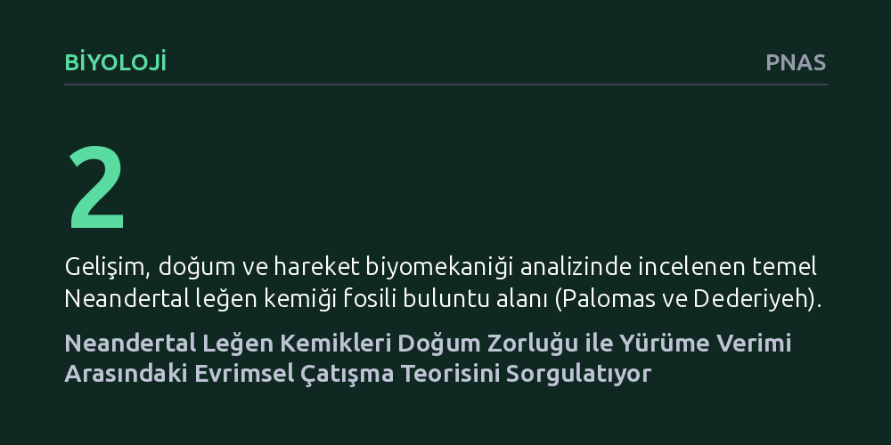

BIYOLOJI · PNAS · 2026-09-08
Araştırmacılar, Palomas ve Dederiyeh buluntularındaki iyi korunmuş Neandertal leğen kemiklerini inceleyerek büyük beyinli bebek doğumu ile iki ayak üzerinde yürüme verimi arasındaki ilişkiyi araştırdı. Bulgular, leğen kemiği yapısının yürüme verimini düşürmeden geniş doğum kanalına izin verdiğini göstererek klasik doğum ikilemi varsayımını tartışmaya açıyor.
İki ayak üzerinde dik yürümenin insan türünde zorlu doğumu kaçınılmaz kıldığına dair onlarca yıllık temel evrimsel kabulün yeniden değerlendirilmesini sağlar.

Antropoloji ve evrimsel biyolojide uzun yıllardır kabul gören temel teorilerden biri "doğum ikilemi" (obstetrical dilemma) olarak adlandırılır. Bu teoriye göre, insanın iki ayak üzerinde dik yürümesi leğen kemiğinin daralmasını ve bipedal hareketin mekanik açıdan daha verimli olmasını gerektirmiştir. Ancak bu daralma, insanın evrim sürecinde giderek büyüyen beynine sahip bebeklerin doğumunu ciddi biçimde zorlaştıran anatomik bir çıkmaz yaratmıştır.
Uzun süredir insan türünün doğum sırasında yaşadığı güçlüklerin ve bebeklerin görece erken doğmasının temel nedeni olarak bu biyomekanik uzlaşma gösteriliyordu. Ancak insan evriminin yakın akrabaları olan Neandertallerin anatomisi ayrıntılı biçimde incelendikçe, leğen kemiğinin biçimi ile yürüme kabiliyeti arasındaki bu katı takas teorisinin her hominin türü için geçerli olup olmadığı sorusu öne çıktı.
Bu evrimsel soruyu somut verilerle test etmek için araştırmacılar, olağanüstü derecede iyi korunmuş iki Neandertal leğen kemiği fosilini incelemeye aldı. İspanya'daki Sima de las Palomas alanında bulunan yetişkin bir bireye ait leğen kemiği ile Suriye'deki Dederiyeh Mağarası'ndan çıkarılan çocuk yaştaki Neandertal bireyinin kalıntıları bu çalışmanın ana omurgasını oluşturdu.
Farklı büyüme ve yaşam evrelerini temsil eden bu iki örneğin birlikte incelenmesi, Neandertallerde kalça ve leğen kemiği mimarisinin yalnızca yetişkinlikte nasıl işlediğini değil, bireysel gelişim sürecinde nasıl şekillendiğini de anlama fırsatı sundu. Araştırmacılar, bu kemiklerin üç boyutlu geometrik yapısını modern insanların anatomisiyle karşılaştırdı.
Analizler, Neandertallerin leğen kemiğinin modern insana kıyasla belirgin şekilde daha geniş ve yana doğru açılı bir mimariye sahip olduğunu gösterdi. Bu genişlik, hem fetüsün geçişine olanak sağlayan doğum kanalını genişletiyor hem de doğum sürecini mekanik açıdan rahatlatıyordu.
En dikkat çekici sonuç ise bu yapısal genişliğin iki ayak üzerinde yürüme verimini düşürmediğinin anlaşılması oldu. Biyomekanik modellemeler ve eklem bağlantı açıları, Neandertallerin geniş pelvislerine rağmen enerjik açıdan verimli biçimde yürüyebildiklerini ortaya koydu. Dolayısıyla geniş bir leğen kemiğine sahip olmak, dik yürüme yetisini bozan doğrudan bir engel oluşturmuyordu.
Bu çalışma, leğen kemiği biçiminin yalnızca yürümek ve doğum yapmak arasındaki zorunlu bir ödünleşme olarak açıklanamayacağını gösteriyor. Neandertal anatomisi, insan soy hattında yürüme kabiliyetinden taviz vermeden de geniş bir doğum kanalının korunabildiğini kanıtlıyor.
Sonuç olarak, modern insanların daha dar leğen kemiği yapısının ve zorlu doğum sürecinin arkasında sadece iki ayak üzerinde yürümenin getirdiği mekanik baskının değil; metabolik kısıtlar, iklim adaptasyonu ve gebelik süresi gibi farklı biyolojik etkenlerin de bulunabileceği ihtimali güç kazanıyor.